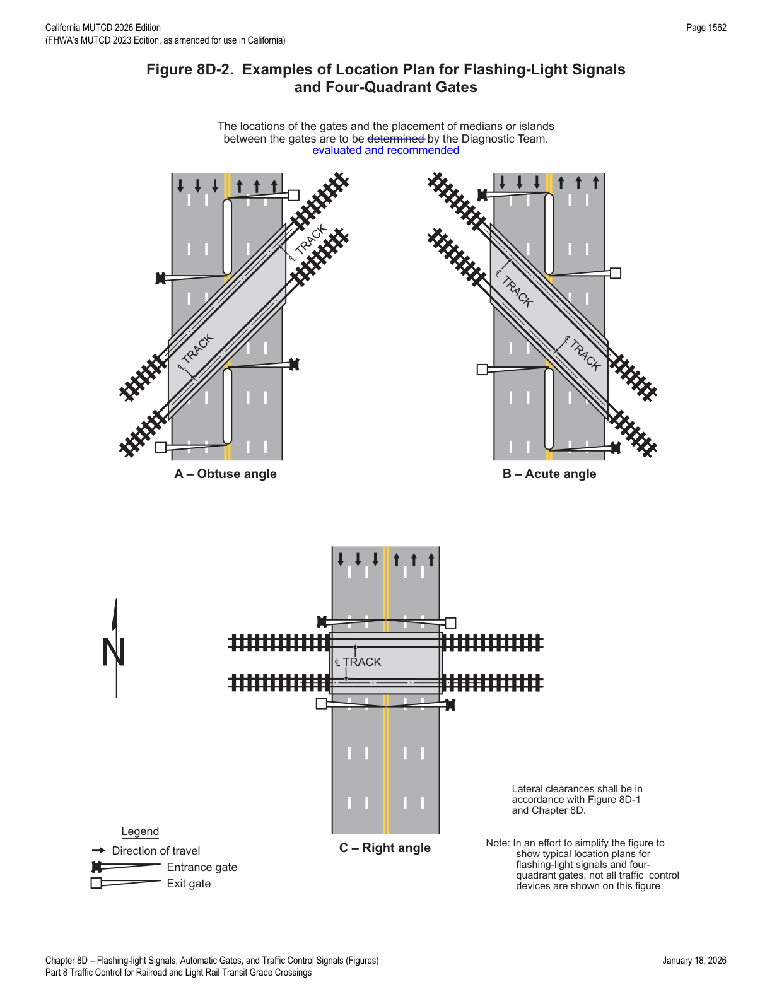
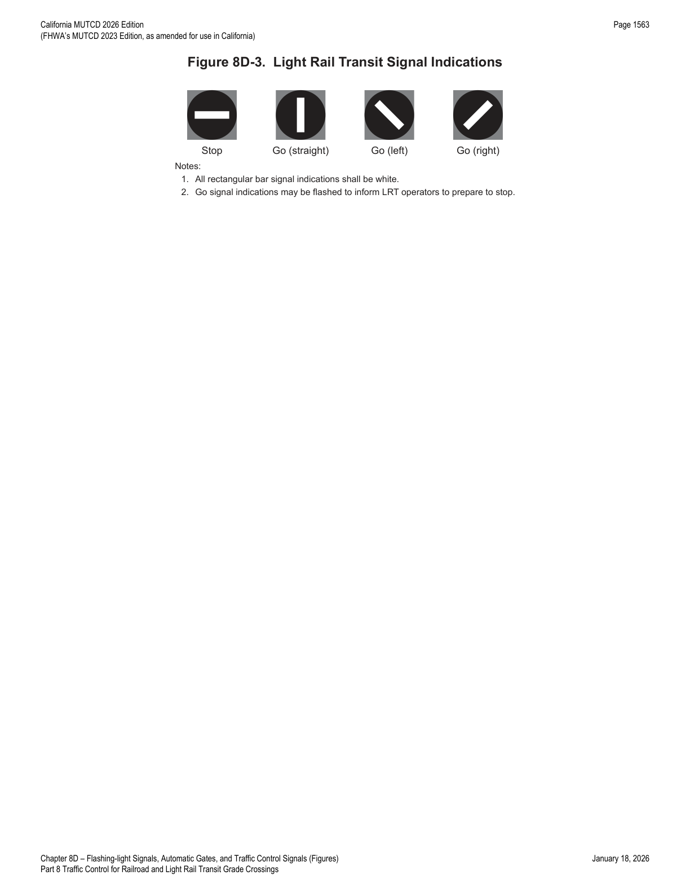
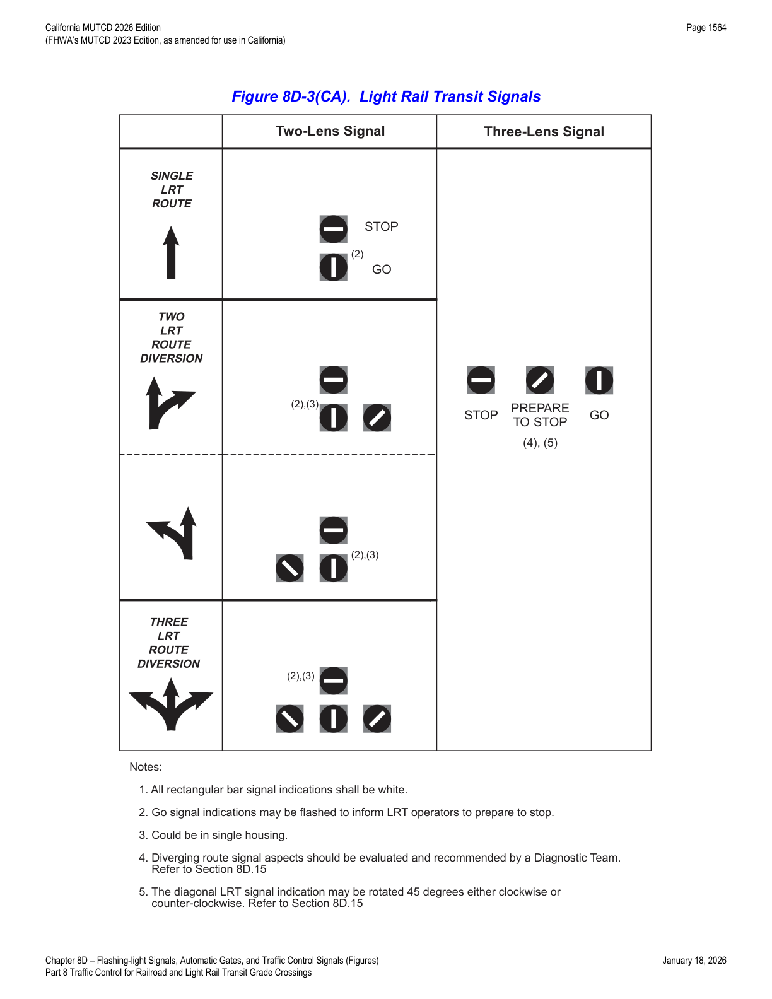

Part 8 · Traffic Control for Railroad and Light Rail Transit Grade Crossings · Chapter 8D
Flashing-Light Signals, Automatic Gates, and Traffic Control Signals
The active traffic control devices that warn of and physically block approaching rail or LRT traffic — flashing-light signals, automatic gates, Exit Gate/Four-Quadrant Gate systems, wayside horns, rail traffic detection, traffic-signal preemption and pre-signals/queue cutter signals, warning beacons, and LRT signal indications.
8D.01Introduction
- 01Active traffic control systems inform road users of the approach or presence of rail traffic at grade crossings. These systems include Exit Gate systems, automatic gates, flashing-light signals, traffic control signals, actuated blank-out and variable message signs, and other active traffic control devices used in conjunction with the signs and pavement markings described in Chapters 8B and 8C, respectively.
- 02Figure 8D-1 shows a post-mounted flashing-light signal (two light units mounted in a horizontal line), a flashing-light signal mounted on an overhead structure, and an automatic gate assembly.
- 03Where LRT speed is cited in this Part, it refers to the maximum speed at which LRT equipment is permitted to traverse a particular grade crossing.
- 03aCPUC General Order 143, "Safety Rules and Regulations Governing Light-Rail Transit," as amended, governs the operation and allowable speeds of light rail transit systems.
- 04Post-mounted and overhead flashing-light signals may be used separately or in combination with each other as recommended by the Diagnostic Team and determined by CPUC. Flashing-light signals may also be used without automatic gate assemblies, as recommended by the Diagnostic Team and determined by CPUC.
- 05The meaning of flashing-light signals and automatic gates shall be as stated in CVC § 22451 (see Section 1A.06).
- 06The location for flashing-light signals and automatic gates shall be as shown in Figure 8D-1.
- 07Where there is a curb, a horizontal offset of at least 2 feet shall be provided from the face of the vertical curb to the nearest part of the signal or automatic gate arm in its upright position. Where a cantilevered-arm flashing-light signal is used, the vertical clearance shall be at least 17 feet above the crown of the highway to the lowest point of the signal unit.
- 08Where there is a shoulder but no curb, a horizontal offset of at least 2 feet from the edge of a paved shoulder shall be provided, with an offset of at least 6 feet from the edge of the traveled way.
- 09Where there is no curb or shoulder, the minimum horizontal offset shall be 6 feet from the edge of the traveled way.
- 10Minimum clearance dimensions for flashing-light signals and automatic gates relative to the closest track shall conform to standards provided by the railroad company and/or transit agency, and the regulatory agency with statutory authority (if applicable) CPUC.
- 11Equipment housings (controller cabinets) should have a lateral offset of at least 30 feet from the edge of the highway, and, where railroad or LRT property and conditions allow, at least 25 feet from the nearest rail.
- 12If a pedestrian route is provided, sufficient clearance from supports, posts, and automatic gate mechanisms should be maintained for pedestrian travel.
- 13Where recommended by the Diagnostic Team, a lateral escape route to the right-hand side of the highway in advance of the grade crossing traffic control devices should be kept free of guardrail or other ground obstructions. Where guardrail is not deemed necessary or appropriate, barriers should not be used for protecting signal supports.
- 14The same lateral offset and roadside safety features should apply to flashing-light signal and automatic gate locations on both the right-hand and left-hand sides of the roadway.
- 14aThe visibility of flashing-light signals to approaching vehicular and/or pedestrian traffic should be the highest priority for flashing-light signal placement and aiming.
- 15In industrial or other areas involving only low-speed highway traffic, or where signals are vulnerable to damage by turning truck traffic, guardrail may be installed to provide protection for the signal assembly.
- 16Where both traffic control signals and flashing-light signals (with or without automatic gates) are in operation at the same highway-LRT grade crossing, the operation of the devices should be coordinated to avoid any display of conflicting signal indications.
- 17If highway traffic signals must be located within close proximity to the flashing-light signals, the highway traffic signals may be mounted on the same overhead structure as the flashing-light signals.
![Figure 8D-1. Composite Drawing of Active Traffic Control Devices for Grade Crossings Showing Clearances: overhead flashing-light signal with 8-inch or 12-inch lenses, 17 ft minimum clearance above the crown of roadway, post-mounted flashing-light signal with crossbuck and Number of Tracks plaque, 30-inch lens spacing, Emergency Notification System sign, 8-9 ft mounting height, 2 ft horizontal offset from curb, gate arm with three red lights, 3.5-4.5 ft down-position height, counterweight, and 4-inch maximum foundation height.](../assets/img/part8/d-flashing-light-signals-automatic-gates/fig-01.png)
8D.02Flashing-Light Signals
- 01Section 8D.04 contains additional information regarding flashing-light signals at highway-LRT grade crossings in semi-exclusive and mixed-use alignments.
- 02If used, the flashing-light signal assembly (shown in Figure 8D-1) on the side of the highway shall include a standard Crossbuck (R15-1) sign and, where there is more than one track, a supplemental Number of Tracks (R15-2P) plaque, all of which indicate to motorists, bicyclists, and pedestrians the location of a grade crossing.
- 03The bottom of the Number of Tracks (R15-2P) plaque (when used) should be located as low as practicable above the flashing-light backgrounds. The Crossbuck (R15-1) sign should be located just above the Number of Tracks plaque or, if no plaque is present, the bottom of the Crossbuck sign should be located as low as practicable above the flashing-light backgrounds.
- 04Additional information regarding sizes and clearances of components used on flashing-light signals can be found in Part 3 of the 2023 AREMA Communications and Signals Manual (AREMA).
- 05Except for median-mounted flashing-light signals, bells or other audible warning devices shall be included in the assembly at highway-rail grade crossings and shall be operated in conjunction with the flashing-light signals to provide additional warning for pedestrians, bicyclists, and/or other non-motorized road users.
- 05aAn audible device, such as a bell, that is operated in conjunction with flashing-light signals may be mounted on either the top or side of the mast of the flashing-light signal assembly.
- 05bThe minimum mounting height for any part of the audible device, including the mounting arm, shall be no lower than the bottom of the flashing-light signals.
- 06When indicating the approach or presence of rail traffic, the flashing-light signal shall display toward approaching highway traffic two red lights mounted in a horizontal line, flashing alternately.
- 07If used, flashing-light signals shall be placed to the right-hand side of approaching highway traffic on all highway approaches to a grade crossing. They shall be located laterally with respect to the highway in compliance with Figure 8D-1, except where such location would adversely affect signal visibility.
- 08If used at a grade crossing with highway traffic in both directions, back-to-back flashing-light signals shall be placed on each side of the tracks. On multi-lane one-way streets and divided highways, flashing-light signals shall be placed on the approach side of the grade crossing on both sides of the roadway, or shall be placed above the highway.
- 09Each red signal unit in the flashing-light signal shall flash alternately. The number of flashes per minute for each lamp shall be 35 minimum and 65 maximum. Each lamp shall be illuminated for approximately the same length of time; the total time of illumination of each pair of lamps shall be the entire operating time.
- 10Flashing-light units shall use either 8-inch or 12-inch nominal diameter lenses. Refer to CPUC General Order 75, as amended.
- 11In choosing between the 8-inch or 12-inch nominal diameter lenses, consideration should be given to the principles stated in Section 4E.02.
- 12If flashing-light signals are used, at least one pair of flashing lights should be visible from each approach lane of the roadway.
- 13The center-to-center distance between the two red lights in a flashing-light unit should be approximately 30 inches.
- 14The mounting height of the flashing-light units, measured from the center of the flashing-light unit housing to the elevation of the crown of the roadway, should be between 8 feet and 9 feet.
- 15The top of the support pole foundation should be no more than 4 inches above the surface of the ground and should be at the same elevation as the crown of the roadway.
- 15aWhere site conditions do not allow the top of the support pole foundation to meet the guidance above, the shoulder slope may need to be re-graded, or the height of the railroad signal mast may need to be adjusted to meet requirements for vertical clearance above the roadway.
- 16Grade crossing flashing-light signals shall operate at low voltage using storage batteries either as a primary or stand-by source of electrical energy. Provision shall be made to provide a source of energy for charging batteries.
- 17Additional flashing-light signals may be mounted on the same supporting post and directed toward vehicular traffic approaching the grade crossing from other than the principal highway route, such as where approaching routes exist on highways closely adjacent to and parallel to the track(s).
- 18Where the storage distance for vehicles approaching a grade crossing is less than a design vehicle length, the Diagnostic Team should consider providing additional flashing-light signals aligned toward the movement turning toward the grade crossing.
- 19The Diagnostic Team should consider the use of additional flashing-light signals to provide supplemental warning to pedestrians, especially on one-way streets and divided highways.
- 20References to lenses in this Section shall not be used to limit flashing-light signal optical units to incandescent lamps within optical assemblies that include lenses.
- 21Research has resulted in flashing-light signal optical units that are not lenses, such as, but not limited to, light-emitting diode (LED) flashing-light signal modules.
- 22If a Diagnostic Team recommends and CPUC determines that it is appropriate, flashing-light signals may be installed on overhead structures or cantilevered supports (as shown in Figure 8D-1) where needed for additional emphasis or better visibility to approaching traffic, particularly on multi-lane approaches or highways with profile restrictions.
- 23If a Diagnostic Team recommends and CPUC determines that one flashing-light signal on the cantilever arm is not sufficiently visible to road users, one or more additional flashing-light signals may be mounted on the supporting post and/or on the cantilever arm.
- 23aFor an approach to a pre-signal or queue cutter signal at a grade crossing, the Diagnostic Team should consider whether omission of overhead flashing-light signals would enhance the conspicuity of the pre-signal or queue cutter signal.
- 24Breakaway or frangible bases shall not be used on the supporting posts for overhead structures or cantilevered arms that support overhead flashing-light signals.
8D.03Automatic Gates
- 01An automatic gate is a traffic control device used in conjunction with flashing-light signals.
- 02The automatic gate (see Figure 8D-1) shall consist of a drive mechanism and a fully retroreflective red-and-white-striped gate arm with lights. When in the down position, the gate arm shall extend across the approaching lanes of highway traffic.
- 03In the normal sequence of operation, unless constant warning time detection or other advanced system requires otherwise, the flashing-light signals and the lights on the gate arm (in its normal upright position) shall be activated immediately upon detection of approaching rail traffic. The gate arm shall start its downward motion not less than 3 seconds after the flashing-light signals start to operate, shall reach its horizontal position at least 5 seconds before the arrival of the rail traffic, and shall remain in the down position until the rail traffic completely clears the grade crossing.
- 04When the rail traffic clears the grade crossing, and if no other rail traffic is detected, the gate arm shall ascend to its upright position, following which the flashing-light signals and the lights on the gate arm shall cease operation.
- 05Gate arms shall be fully retroreflective on both sides and shall have vertical stripes alternately red and white at 16-inch intervals measured horizontally. The width of the retroreflective sheeting on the front of the gate arm shall be at least 4 inches for the first 32 feet of gate arm length measured from the center of the gate mast; beyond 32 feet to the tip of the gate, the retroreflective sheeting shall be at least 2 inches in width.
- 05aRefer to FHWA's List of Known Errors for an error in the Paragraph 05 text. Refer to Section 1A.04 for more details.
- 06It is acceptable to replace a damaged gate arm with a gate arm having vertical stripes even if the other existing gate arms at the same grade crossing have diagonal stripes; it is also acceptable to replace a damaged gate arm with a gate arm having diagonal stripes if the other existing gate arms at the crossing have diagonal stripes, in order to maintain consistency per Paragraph 13 of Section 1B.03.
- 07Gate arms shall have at least three red lights, as shown in Figure 8D-1.
- 08When activated, the gate arm light nearest the tip shall be illuminated continuously and the other lights shall flash alternately in unison with the flashing-light signals, such that the left-most flashing gate arm light(s) flashes simultaneously with the left-hand light of the flashing-light signals and the right-most flashing gate arm light(s) flashes simultaneously with the right-hand light of the flashing-light signals.
- 09Typical gate arm lights are approximately 4 inches in diameter if circular. Rectangular gate arm lights with approximately the same illuminated surface area are sometimes used instead.
- 10The entrance gate arm mechanism shall be designed to fail safe in the down position.
- 11The gate arm should ascend to its upright position in 12 seconds or less.
- 12In its normal upright position, when no rail traffic is approaching or occupying the grade crossing, the gate arm should be approximately vertical (see Figure 8D-1).
- 13In the design of individual installations, consideration should be given to timing the operation of the gate arm to accommodate large and/or slow-moving motor vehicles.
- 14The gate arms should cover the approaching highway to block all motor vehicles from being driven around the gate arms without crossing the center line.
- 15The height of the gate arm when in the down position should be between 3.5 feet and 4.5 feet above the crown surface of the roadway. When down, no portion of the counterweight should extend into the traveled way, sidewalk, or pathway.
- 16Channelizing devices and/or raised median islands may be used to discourage driving around lowered automatic gates.
- 17Where sufficient space is available, median islands should be at least 60 feet in length.
- 18Where automatic gates are located in the median, additional median width may be required to provide the minimum clearance for the counterweight supports.
- 19Automatic gates may be supplemented by cantilevered flashing-light signals (see Figure 8D-1) where there is a need for additional emphasis or better visibility.
In practice, the 3-second/5-second gate-descent timing in Paragraph 03 is the foundation of every downstream preemption timing calculation in Section 8D.09 — any change to gate mechanics or approach speed assumptions has to be re-checked against this baseline.
8D.04Use of Active Traffic Control Systems at LRT Grade Crossings
- 01At highway-LRT grade crossings where LRT speeds exceed 25 mph, active traffic control systems (see Section 8D.01) shall be used.
- 02At highway-LRT grade crossings where LRT speeds exceed 35 mph, the active traffic control system shall include automatic gates. Refer to CPUC General Order 143, as amended.
- 03The Diagnostic Team may recommend an active traffic control system with automatic gates at highway-LRT grade crossings where LRT speeds do not exceed 35 mph.
- 04At highway-LRT grade crossings where LRT speeds are 25 mph or less, active traffic control systems should be used unless the Diagnostic Team recommends and CPUC determines that the use of Crossbuck Assemblies, STOP signs alone, or YIELD signs alone would be adequate.
- 05Where the highway-LRT grade crossing is at a location other than an intersection and LRT speeds exceed 20 mph, traffic control signals should not be used in lieu of flashing-light signals.
- 06Sections 8D.02 and 8D.03 contain additional provisions regarding the design and operation of flashing-light signals and automatic gates, respectively.
- 07If flashing-light signals are in operation at a highway-LRT crossing used by pedestrians, bicyclists, and/or other non-motorized road users, an audible device such as a bell shall also be provided and shall be operated in conjunction with the flashing-light signals.
The 25 mph and 35 mph LRT-speed thresholds in this Section are the key design triggers for a mixed-use or semi-exclusive LRT alignment: below 25 mph, passive control can be justified by the Diagnostic Team/CPUC; above 25 mph active control is mandatory; above 35 mph, automatic gates specifically become mandatory.
8D.05Exit Gate and Four-Quadrant Gate Systems
- 01Exit Gate systems may be installed to improve safety at grade crossings where a Diagnostic Team recommends and CPUC determines that less restrictive measures, such as automatic gates and median islands, are not effective.
- 02A grade crossing that includes exit gates on some, but not all, of the exiting lanes is an Exit Gate system, but is not considered a Four-Quadrant Gate system.
- 03"Four-Quadrant Gate system" is used generically to mean that all entrances and exits from a grade crossing are controlled by automatic gates to provide full closure of all entering and exiting lanes. The term refers to the fact that a full closure is provided, not to the number of gates installed.
- 04The Exit Gate system shall use a series of automatic gates with fully retroreflective red-and-white-striped gate arms with lights; when in the down position, the gate arms extend individually across the entrance and exit lanes of the roadway, as shown in Figure 8D-2. The provisions in Section 8D.02 for flashing-light signals shall be followed for signal specifications, location, and clearance distances.
- 05Gate arm design, colors, and lighting requirements shall be in accordance with Section 8D.03.
- 06The provisions in Section 8D.03 for automatic gates are applicable to exit gates.
- 07In the normal sequence of operation, unless constant warning time detection or other advanced system requires otherwise, the flashing-light signals and the lights on the gate arms (in their normal upright positions) shall be activated immediately upon detection of approaching rail traffic. The entrance gate arms shall start their downward motion not less than 3 seconds after the flashing-light signals start to operate and shall reach their horizontal position at least 5 seconds before the arrival of the rail traffic. Exit gate arm activation and downward motion shall be based on detection or timing requirements recommended by a Diagnostic Team and established or determined by CPUC. If an Exit Gate system is present, the exit gate clearance time (see AREMA Manual) shall be long enough to permit the exit gate arm to lower after a design vehicle of maximum length is clear of the minimum track clearance distance (see Section 8A.07). The gate arms shall remain in the down position as long as the rail traffic occupies the grade crossing.
- 07aRefer to FHWA's List of Known Errors for an error in the Paragraph 07 text. Refer to Section 1A.04 for more details.
- 07bThe term "queue exit gate clearance time" as used in Paragraph 07 is typically interpreted as equivalent to the term "exit gate clearance time."
- 08When the rail traffic clears the grade crossing, and if no other rail traffic is detected, the gate arms shall ascend to their upright positions, following which the flashing-light signals and the lights on the gate arms shall cease operation.
- 09Except as provided in Paragraph 21, the exit gate arm mechanism shall be designed to fail-safe in the up position.
- 09bTimed Exit Gate Operating Mode shall not be used. Only Dynamic Exit Gate Operating Mode shall be used. Refer to CPUC General Order 75, as amended.
- 10At locations where gate arms are offset a sufficient distance for motor vehicles to drive between the entrance and exit gate arms, median islands (see Figure 8D-2) shall be installed in accordance with needs recommended by the Diagnostic Team and determined by CPUC.
- 11The gate arm should ascend to its upright position in 12 seconds or less.
- 12At highway-rail grade crossings, constant warning time detection circuits should be used with Exit Gate systems where practical.
- 13The operating mode of the exit gates should be determined by a Diagnostic Team.
- 14If the Timed Exit Gate Operating Mode is used, the Diagnostic Team should also determine the Exit Gate Clearance Time (see definition in Section 1C.02).
- 15If the Dynamic Exit Gate Operating Mode is used, highway vehicle intrusion detection devices — part of a system that incorporates processing logic to detect the presence of motor vehicles within the minimum track clearance distance (see Section 8A.07) — shall be installed to control exit gate operation. Exit gates shall be independently controlled for each direction of roadway traffic.
- 16Regardless of which exit gate operating mode is used, the Exit Gate Clearance Time should be considered when determining additional time requirements for the Minimum Warning Time.
- 17The minimum warning time is the least amount of time that active warning devices operate prior to the arrival of rail traffic at a grade crossing.
- 18If an Exit Gate system is used at a location adjacent to an intersection that could cause motor vehicles to queue within the minimum track clearance distance (see Section 8A.07), the Dynamic Exit Gate Operating Mode should be used unless the Diagnostic Team determines otherwise.
- 19If an Exit Gate system is interconnected with a highway traffic signal (see Section 8D.09), back-up or standby power should be considered for the highway traffic signal. Circuitry should also be installed to prevent the highway traffic signal from leaving the track clearance green interval until all of the gates are lowered.
- 19aCircuitry may be installed to prevent the highway traffic signal from leaving the track clearance green interval until vehicles are no longer detected in the track area by the vehicle presence detection system.
- 20Exit Gate systems should include remote health (status) monitoring capable of automatically notifying railroad or LRT signal maintenance personnel when anomalies occur within the system.
- 21Exit gate arms may fail in the down position if the grade crossing is equipped with remote health (status) monitoring.
- 22Exit Gate system installations may include median islands between opposing lanes on an approach to a grade crossing.
- 23Where sufficient space is available, median islands should be at least 60 feet in length.

8D.06Wayside Horn Systems
- 01A wayside horn system (see definition in Section 1C.02) may be installed in compliance with 49 CFR Part 222 to provide audible warning directed toward road users at a highway-rail grade crossing or at a pathway grade crossing.
- 02Wayside horn systems used at grade crossings where the locomotive horn is not sounded shall be equipped and shall operate in compliance with the requirements of Appendix E to 49 CFR Part 222.
- 03The same lateral clearance and roadside safety features described in Section 8D.01 should apply to wayside horn systems. Wayside horn systems, when mounted on a separate pole assembly, should be installed no closer than 15 feet from the center of the nearest track and should be positioned so as not to obstruct the motorist's line of sight to the flashing-light signals.
8D.07Rail Traffic Detection
- 01The devices employed in active traffic control systems shall be actuated by some form of rail traffic detection.
- 02Rail traffic detection circuits, insofar as practical, shall be designed on the fail-safe principle.
- 03Flashing-light signals shall operate for at least 20 seconds before the arrival of any rail traffic, except as provided in Paragraph 04.
- 04On tracks where all rail traffic operates at less than 20 mph, and where road users are directed by an authorized person on the ground not to enter the crossing at all times that approaching rail traffic is about to occupy it, a shorter signal operating time for the flashing-light signals may be used.
- 05Additional warning time may be provided when determined by an engineering study.
- 06Where the speeds of different rail traffic on a given track vary considerably under normal operation, special devices or circuits should be installed to provide reasonably uniform notice in advance of all rail traffic movements over the grade crossing. Special control features should be used to eliminate the effects of station stops and switching operations within approach control circuits, to prevent excessive activation of the traffic control devices while rail traffic is stopped on or switching upon the approach track control circuits.
8D.08Use of Traffic Control Signals at Grade Crossings
- 01Except as provided in Paragraph 02, traffic control signals shall not be used instead of flashing-light signals to control road users at a highway-rail grade crossing.
- 02Traffic control signals may be used instead of flashing-light signals to control road users at industrial highway-rail grade crossings and other places where the maximum speed of trains is 10 mph or less.
- 03Sections 8D.04 and 8D.14 contain information regarding the use of traffic control signals at highway-LRT grade crossings.
- 04The appropriate provisions of Part 4 relating to traffic control signal design, installation, and operation shall be applicable where traffic control signals are used instead of flashing-light signals to control road users at grade crossings.
8D.09Preemption of Highway Traffic Signals at or Near Grade Crossings
- 01Traffic signal preemption for grade crossings is a complex topic requiring specific understanding of grade crossing warning systems and highway traffic signal operations. Where the traffic signal controller unit is interconnected with the grade crossing warning system for preemption, a combined system is created that requires thorough understanding of the design and operating parameters to provide proper operation.
- 02The Federal Railroad Administration (FRA) has issued two documents providing additional information: "Technical Bulletin S-12-01, Guidance Regarding the Appropriate Process for the Inspection of Highway-Rail Grade Crossing Warning System Pre-emption Interconnections with Highway Traffic Signals," and "Safety Advisory 2010-02, Signal Recording Devices for Highway-Rail Grade Crossing Active Warning Systems that are Interconnected with Highway Traffic Signal Systems."
- 02aPreemption of highway traffic signals at or near grade crossings ("railroad preemption") involves notification of approaching rail traffic forwarded from the railroad or LRT equipment to the highway traffic signal controller unit or assembly, causing the signal to enter a special control mode. Railroad preemption differs from LRT priority because a railroad preemption design assumes the train cannot stop for signal indications; priority control of traffic control signals (see Section 4F.20), such as LRT priority, is not considered railroad preemption.
- 02bRailroad preemption is evaluated based on many location-specific factors such as the relation of the tracks to the intersection, the number of phases in the traffic signal, other roadway conditions, and information provided by the railroad or LRT agency.
- 02cThe "pedestrian change interval" (see Section 4I.06) is an interval during which the flashing UPRAISED HAND (DON'T WALK) indication is displayed; it is a component of the "pedestrian clearance time."
- 02dThe "track clearance interval" (see Paragraph 11) provides an opportunity for motor vehicles at the grade crossing to clear the track prior to the arrival of rail traffic, typically by displaying a green indication to motorists moving away from the track. The "right-of-way transfer time" (see Paragraph 20) is the amount of time needed prior to display of the track clearance interval.
- 02eShortening or omitting the pedestrian clearance time presents potential safety conflicts for road users — an important consideration near schools, senior centers, stations, event centers, and other significant pedestrian trip generators. Where the railroad preemption system is designed to include pedestrian clearance time, that time is a component of the right-of-way transfer time.
- 02fWhere traffic control signals interconnected with a grade crossing include pedestrian signal heads, the Diagnostic Team shall evaluate and recommend, subject to CPUC determination, whether the right-of-way transfer time includes pedestrian clearance time.
- 02gThe railroad preemption system should be designed to be capable of providing pedestrian clearance time during the approach of a train.
- 03If a grade crossing is equipped with flashing-light signals and is located 200 feet or less from an intersection or midblock location controlled by a traffic control signal, a pedestrian hybrid beacon, or an emergency-vehicle hybrid beacon, the intersection should be provided with rail preemption in accordance with Section 4F.19 unless otherwise recommended by the Diagnostic Team and determined by CPUC.
- 04Coordination with the flashing-light signals — such as queue detection and queue cutter signals, blank-out signs, or other alternatives — should be considered where a traffic control signal, a pedestrian hybrid beacon, or an emergency-vehicle hybrid beacon is located more than 200 feet from the grade crossing. Factors to consider include traffic volumes, highway vehicle mix, highway vehicle and train approach speeds, frequency of trains, presence of midblock driveways or unsignalized intersections, and the potential for vehicular queues from an adjacent downstream grade crossing or highway traffic signal to extend into the minimum track clearance distance (see Section 8A.07).
- 05The highway agency or authority with jurisdiction and CPUC (if applicable) should jointly evaluate and recommend, subject to CPUC determination, the preemption operation and timing of highway traffic signals interconnected with grade crossings adjacent to signalized locations.
- 06If a highway traffic signal is installed 200 feet or less from a passive grade crossing, unless otherwise recommended by the Diagnostic Team and determined by CPUC, an active grade crossing warning system should be installed to provide a means to preempt the highway traffic signal in order to clear vehicles from the minimum track clearance distance (see Section 8A.07) upon approach of rail traffic.
- 07If a highway traffic signal is interconnected with flashing-light signals, the flashing-light signals should be provided with automatic gates to prevent additional vehicles from being drawn into the minimum track clearance distance during the track clearance interval prior to the arrival of rail traffic, unless a Diagnostic Team recommends and CPUC determines otherwise.
- 08Regular joint inspections by the highway agency, CPUC (if applicable), and the railroad company or transit agency are a best practice, typically verifying the preemption operation, the warning/preemption time provided, and the timing of interconnected/coordinated highway traffic signals.
- 09Section 4F.19 recommends that traffic control signals adjacent to highway-rail grade crossings that are coordinated with the flashing-light signals or that include railroad preemption features be provided with a back-up power supply.
- 10Information regarding the type of preemption and any related timing parameters shall be provided to the railroad company or transit agency so it can design the appropriate train detection circuitry.
- 11If preemption is provided, unless otherwise recommended by a Diagnostic Team and determined by CPUC, the normal sequence of highway traffic signal indications shall be preempted upon the approach of a train to provide a track clearance interval — an opportunity for motor vehicles at the grade crossing to clear the minimum track clearance distance prior to the arrival of rail traffic.
- 12Where train switching or train restarts occur close to a grade crossing, the Diagnostic Team may recommend, subject to CPUC determination, that the preemption time be reduced in accordance with the railroad's or transit agency's operating requirements.
- 13Where flashing-light signals are in place at a grade crossing, any highway traffic signal faces installed within 50 feet of any rail shall be preempted upon the approach of rail traffic. The Diagnostic Team shall evaluate and recommend, subject to CPUC determination, the signal indications displayed by the highway traffic signal faces that control movements across the grade crossing in accordance with Section 4F.19, to avoid conflicting signal indications with the flashing-light signals.
- 14Where flashing-light signals are in place at a grade crossing, the operation of any flashing yellow beacon installed within 50 feet of any rail should be considered by a Diagnostic Team to determine/recommend whether the beacon's operation should be terminated during the approach and passage of rail traffic.
- 15The preemption special control mode shall be activated by a supervised preemption interconnection using fail-safe design principles between the control circuits of the grade crossing warning system and the traffic signal controller unit. The approach of rail traffic shall de-energize the interconnection or send a message via a fail-safe data communication protocol (such as IEEE 1570-2002 (R2008)), which in turn shall activate the traffic signal controller preemption sequence. This shall establish and maintain the preemption condition while the grade crossing warning system is activated, except that where automatic gates exist, the preemption condition shall not be terminated until the automatic gates are energized to start their upward movement.
- 16Advance preemption is notification of approaching rail traffic forwarded to the highway traffic signal controller by the railroad/LRT equipment in advance of activation of the grade crossing warning system.
- 17The maximum preemption time is the maximum amount of time needed, following initiation of the preemption sequence, for the highway traffic signals to complete the right-of-way transfer time, queue clearance time, and separation time.
- 18The separation time is the component of maximum preemption time during which the minimum track clearance distance is clear of vehicular traffic prior to the arrival of rail traffic.
- 19Simultaneous preemption is notification of approaching rail traffic forwarded to the highway traffic signal controller and the grade crossing warning system at the same time.
- 20The right-of-way transfer time is the amount of time needed prior to display of the track clearance interval, including any reaction time needed by the railroad, LRT, or highway traffic signal control equipment, and any green, pedestrian walk/clearance (if used, see Section 4F.19), yellow change, and red clearance intervals for conflicting traffic.
- 21A supervised preemption interconnection incorporates both a normally-open and a normally-closed circuit from the grade crossing warning system to verify proper operation of the interconnection.
- 22Instead of supervision, a double-break preemption interconnection circuit that uses two normally-closed circuits opening both the source and return energy circuits may be used.
- 23A preemption interconnection may incorporate both supervision and double-break circuits.
- 24Where train detection circuits are present at a passive grade crossing, the operation of the preemption interconnection should be treated as if active traffic control devices exist at the crossing, and the preemption operation should be evaluated by a Diagnostic Team consistent with CPUC determination.
- 25Where left turns are permitted at a downstream highway-highway traffic control signal from the roadway approach that crosses the track, and a delayed or impeded left-turn movement could prevent vehicles from clearing the track, a protected left-turn movement should be provided during the track clearance interval if green indications are displayed to the approach for track clearance.
- 26The decision to implement simultaneous or advance preemption should consider the right-of-way transfer time, queue clearance time, and separation time to determine the maximum preemption time; these should be compared to and verified with the operation of the grade crossing traffic control devices, regardless of which preemption type is implemented, since they are based on traffic signal minimum timing, vehicle acceleration characteristics, and physical distances.
- 26aNCHRP Report 812, Signal Timing Manual, Second Edition, provides additional information about preemption considerations for grade crossings, including entry into preemption.
- 27Preemption time variability occurs when the traffic signal controller enters the preemption clearance interval with less than the maximum design right-of-way transfer time, or when the speed of an approaching train varies.
- 28The time interval between initiation of advance preemption and operation of the grade crossing warning system will decrease if rail traffic is accelerating and increase if it is decelerating.
- 29Where preemption is used and automatic gates are present, the possibility that an automatic gate might descend upon a vehicle should be analyzed.
- 30If simultaneous preemption is used, an analysis of extended grade crossing warning time requirements should be conducted.
- 31If advance preemption is used, an analysis of preemption operation, traffic signal sequencing, and phasing should be conducted to identify preemption time variability, including both the condition requiring the longest and the condition requiring the shortest amount of time to enter the track clearance interval.
- 32Where automatic gates are present and green indications are displayed at the downstream traffic control signal during the track clearance interval, the preemption sequence shall be designed such that the green indications are not terminated until the automatic gate(s) controlling access over the grade crossing toward the downstream intersection is fully lowered.
- 33Two mutually-exclusive methods resolve preemption time variability: (A) Gate-down circuitry holds the traffic signal controller sequence in the track clearance interval until the automatic gate(s) is fully lowered; (B) Timing correction adds the right-of-way transfer time to the track clearance interval in the controller unit and sets a fixed maximum period between the start of advance preemption and operation of the flashing-light signals, implemented via a time delay relay or other timing circuit.
- 34FHWA's Highway-Rail Crossing Handbook (3rd Ed.), the Signal Timing Manual (NCHRP Report 812, 2nd Ed., 2015), and the 2023 AREMA Communications and Signals Manual provide additional information about preemption time variability.
- 35Where gate-down circuitry is used and an automatic gate is broken or not fully lowered, the crossing control circuits shall not terminate the track clearance interval before the rail traffic has entered the grade crossing.
- 36Where timing correction is used, a timing circuit shall be used to maintain a maximum time interval between the initiation of advance preemption and the operation of the grade crossing warning system when the approaching rail traffic is decelerating.
- 37Where a highway-highway intersection controlled by traffic control signals is interconnected with a grade crossing equipped with exit gates, advance preemption should be used because of the additional operating time required for the exit gates.
- 38Where rail traffic routinely stops and re-starts within or just outside the approaches to a grade crossing interconnected with highway traffic signals, the effects on preemption operation should be analyzed by a Diagnostic Team.
- 39Highway traffic signal control equipment should be capable of providing immediate re-service of successive preemption requests from the railroad warning devices, even if the initial sequence has not completed, and should be able to promptly return to the start of the track clearance interval whenever demand for preemption is cancelled and reactivated, at any point in the preemption sequence.
- 40Where traffic control signals are programmed to operate in a flashing mode during the preemption dwell interval (the period following the track clearance interval that lasts for the duration of the preemption interconnection activation), the beginning of the preemption dwell flashing mode shall not occur until the grade crossing equipment indicates that the rail traffic has entered the grade crossing.
- 41At locations where conflicting preemption calls might be received to serve boats and trains, the Diagnostic Team shall evaluate and recommend the relative priority when conflicting preemption calls occur (see Section 4F.19). Where the boat and train do not conflict, the Diagnostic Team shall evaluate and recommend the preemption sequence for simultaneous calls. The U.S. Coast Guard or other waterway regulatory authority shall be invited to participate on, or provide input to, the Diagnostic Team.
- 42Section 4C.10 describes the Intersection Near a Grade Crossing signal warrant, intended for use where the proximity of a grade crossing to a STOP- or YIELD-controlled intersection approach is the principal reason to consider installing a traffic control signal.
- 43Section 4F.19 describes additional considerations regarding preemption of traffic control signals at or near grade crossings.
- 44Except as provided in Paragraph 45, permissive-only mode and/or protected/permissive mode for left-turn movements should not be used where the opposing movement is a track clearance phase.
- 45A flashing YELLOW ARROW signal indication may be used where the opposing movement is a track clearance phase, if evaluated and recommended by a Diagnostic Team and consistent with CPUC determination.
- 46Railroad preemption typically operates with a sequence similar to Paragraphs 47–52.
- 47If there is sufficient advance preemption time, the pedestrian walk and clearance intervals are provided; if not, the pedestrian walk and/or change intervals are shortened or omitted.
- 48A yellow change interval and red clearance interval are provided for any signal phase that is green or yellow when preemption is initiated and that will be red during the track clearance interval; pedestrian signal faces display a steady UPRAISED HAND.
- 49Phases that are green when preemption is initiated and will remain green during the track clearance interval remain green. If permissive left-turn movements would conflict with the track clearance green phase, a yellow change interval and red clearance interval are provided prior to displaying the track clearance green phase.
- 50The track clearance interval is provided — typically a green indication — for the signal phase(s) controlling the approach that crosses the tracks, followed by yellow change and red clearance intervals.
- 51If gates are provided, limited service is then typically provided following the track clearance interval: signal indications controlling movements toward the tracks display steady red, while the signal sequences phases not controlling movements toward the tracks (with pedestrian phases operating in conjunction with the permitted phases).
- 52The traffic signal returns to normal operation following release of railroad preemption.
8D.10Movements Prohibited During Preemption
- 01At a signalized intersection located within 100 feet of a grade crossing where the intersection traffic control signals are preempted by the approach of rail traffic, all existing permissive-only turning movements toward the grade crossing should be prohibited, steady red arrow indications should be shown to existing protected/permissive and protected-only turning movements toward the crossing, and red indications should be shown to the straight-through movement toward the crossing during preemption. The prohibition of a permissive-only turning movement should be accomplished through installation of a blank-out turn prohibition (R3-1a or R3-2a) sign (see Figure 8B-1).
- 02All movements toward the track may be prohibited at a signalized intersection preempted by the approach of rail traffic, even if the clear storage distance is more than 100 feet.
- 03Including the word "TRAIN" as part of the blank-out turn prohibition sign informs road users that the turn prohibition is in effect because rail traffic is approaching or occupying a nearby grade crossing, and will terminate after the rail traffic clears.
- 04Rail operations can include activated blank-out turn prohibition (R3-1a or R3-2a) signs at unsignalized highway-highway intersections near grade crossings, such as where a semi-exclusive or mixed-use alignment is within or parallel to a roadway where road users are normally permitted to turn across the tracks.
- 05An LRT-activated blank-out turn prohibition (R3-1a or R3-2a) sign should be used during preemption where all three of the following are present: (A) there is no active warning system for the LRT grade crossing; (B) vehicles on a parallel roadway would normally be permitted to turn left or right across tracks located within 100 feet of the intersection or within its median; and (C) drivers turning at the intersection are not controlled by a traffic control signal.
- 06Blank-out turn prohibition signs associated with preemption shall display their message only when a preemption signal is being received from the railroad or LRT equipment, or while the automatic gate is activated.
- 07The provisions in Chapter 2L for blank-out signs are applicable to R3-1a and R3-2a signs.
- 08Blank-out turn prohibition signs exclusively associated with preemption typically start displaying their message when the track clearance interval begins, or when the grade crossing warning system begins activation, whichever occurs first.
8D.11Pre-Signals at or Near Grade Crossings
- 01If a grade crossing is located close to an intersection controlled by a traffic control signal, and the clear storage distance is less than the design vehicle length, the use of pre-signals to control traffic approaching the grade crossing toward the intersection should be considered.
- 02If a grade crossing equipped with flashing-light signals, but without automatic gates, is located within 200 feet of an intersection controlled by a traffic control signal, a pre-signal should be provided.
- 03A pre-signal is generally used where the grade crossing is less than 200 feet from a downstream signalized intersection. Section 8D.12 contains information for grade crossings 200 feet or more from a downstream signalized intersection.
- 04Other measures that could be considered instead of or in addition to a pre-signal to minimize the possibility of vehicles queuing across the grade crossing include additional lanes, reduced cycle length, split phasing, protected turn phasing, and/or an extended green interval for the approach.
- 05Pre-signal faces shall display a steady red indication during the track clearance interval of the signal preemption sequence, to prohibit additional motor vehicles from entering the minimum track clearance distance (see Section 8A.07).
- 06Pre-signal faces shall not display green indications when the grade crossing flashing-light signals are displaying flashing red indications.
- 07Consideration should be given to using visibility-limited signal faces (see definition in Section 1C.02) for the downstream signal faces that control the approach equipped with pre-signals.
- 08The duration of the extended green interval may be adjusted by vehicle detection located between the pre-signal and the downstream signalized intersection.
- 09The pre-signal phase sequencing may be timed with an offset from the downstream signalized intersection during normal operation, such that the pre-signal's green indication terminates prior to the downstream intersection's green indication, to minimize stopping motor vehicles within the minimum track clearance distance and clear storage distance.
- 10If pre-signals are used, the queue clearance time (see Section 8D.09) should be long enough to allow a design vehicle of maximum length, stopped just inside the minimum track clearance distance, to start up and move through the downstream intersection, or to clear the minimum track clearance distance if there is sufficient clear storage distance.
- 11The storage area for mandatory left-turn and right-turn lanes at signalized intersections downstream from grade crossings sometimes extends back to and across the grade crossing; drivers in the turn lane must then make a straight-through movement crossing the track(s) and a turning movement at the downstream intersection.
- 12A separate pre-signal face for the mandatory left-turn and/or right-turn lane should be provided in addition to the through-movement pre-signal faces where both: (A) the turn-lane storage area extends from the downstream intersection back across the grade crossing, and (B) the green interval for the turning movement does not always begin/end simultaneously with the adjacent through movement's green interval at the downstream intersection.
- 13Where adjacent lanes at a pre-signal are controlled separately, all signal faces shall be capable of displaying CIRCULAR RED, CIRCULAR YELLOW, and straight-through GREEN ARROW indications. Left-turn and right-turn GREEN ARROW indications shall not be used in pre-signal faces, and CIRCULAR GREEN indications shall not be used in pre-signal faces where adjacent lanes are controlled separately.
- 14Where all adjacent lanes at a pre-signal are controlled together, CIRCULAR GREEN indications may be used in pre-signal faces.
- 15If a separate pre-signal face is provided for a mandatory left-turn and/or right-turn lane extending from the downstream intersection back across the grade crossing, that face shall be devoted exclusively to controlling the turn lane separately from adjacent lanes and shall either: (A) be visibility-limited from the adjacent through movement, or (B) have a LEFT (RIGHT) LANE SIGNAL (R10-10b) sign mounted adjacent to the separate signal face controlling a single or farthest turn lane, and a LEFT (RIGHT) TURN LANE SIGNAL (R10-10c) sign mounted adjacent to the separate signal face controlling other turn lanes where multiple turn lanes exist for that movement.
- 16Because pre-signal faces do not always display the same indications as the downstream signalized intersection, the pre-signal approach is considered separate from the downstream intersection approach — Sections 4D.05 through 4D.08 (number, visibility/aiming, and lateral/longitudinal positioning of signal faces) apply separately to it.
- 17The provisions in Section 4D.07 regarding lateral positioning of separate turn signal faces apply to the separate signal faces provided at pre-signals for a mandatory turn lane extending from the downstream intersection back across the grade crossing.
- 18A STOP HERE ON RED (R10-6 or R10-6a) sign should be installed at the pre-signal's stop line.
- 19If a pre-signal is installed upstream from a signalized intersection, a No Turn on Red (R10-11, R10-11a, or R10-11b) sign (see Section 2B.60) shall be installed at the pre-signal for the approach that crosses the track, if turns on red would otherwise be permitted at the downstream intersection.
- 20DO NOT STOP ON TRACKS (R8-8) signs may be installed in conjunction with a pre-signal.
- 21Pre-signal faces may be located either upstream or downstream from the grade crossing to provide the most effective display to approaching road users.
- 22If pre-signal faces must be located within close proximity to the flashing-light signals, they may be mounted on the same overhead structure as the flashing-light signals.
8D.12Queue Cutter Signals at or Near Grade Crossings
- 01A queue cutter signal is a traffic control signal that controls one direction of traffic at a grade crossing to minimize the possibility of vehicles stopping within the minimum track clearance distance. Unlike a pre-signal, a queue cutter signal is independent from the downstream signalized intersection rather than being part of the downstream signal.
- 02At grade crossing locations where the queue from a downstream bottleneck (usually a signalized intersection) frequently extends back across the grade crossing, a queue cutter signal may be installed.
- 03A queue cutter signal may operate in: (A) Actuated mode — dependent on downstream detection of a growing queue; (B) Non-actuated mode — a time-of-day plan based on anticipated downstream queues, similar to a pre-signal; or (C) Variable mode — varying between actuated and non-actuated based on time of day, queue detection, or both.
- 04A non-actuated queue cutter signal is generally used where the grade crossing is between 200 and 400 feet from a downstream bottleneck; an actuated one is generally used beyond 400 feet. Section 8D.11 covers crossings less than 200 feet from a downstream signalized intersection.
- 05Where adjacent lanes at a queue cutter signal are controlled separately, all signal faces shall be capable of displaying CIRCULAR RED, CIRCULAR YELLOW, and straight-through GREEN ARROW indications. Left-turn and right-turn GREEN ARROW indications shall not be used, and CIRCULAR GREEN shall not be used where adjacent lanes are controlled separately.
- 06Where all adjacent lanes at a queue cutter signal are controlled together, CIRCULAR GREEN indications may be used.
- 07Queue cutter signal faces may be located either upstream or downstream from the grade crossing to provide the most effective display.
- 08If queue cutter signal faces must be located close to the flashing-light signals, they may be mounted on the same overhead structure.
- 09A STOP HERE ON RED (R10-6 or R10-6a) sign should be installed at the queue cutter signal's stop line.
- 10DO NOT STOP ON TRACKS (R8-8) signs may be installed in conjunction with a queue cutter signal.
- 11Where a queue cutter signal operates in actuated mode based on vehicle presence detection, the queue detector should be located to provide adequate distance to detect a growing queue, allow the signal to complete any programmed minimum green/yellow change interval, and then allow a design vehicle that lawfully enters during the yellow change interval to clear the minimum track clearance distance before the growing queue reaches the grade crossing.
- 12A queue cutter signal operating in actuated mode and displaying CIRCULAR RED should continue doing so as long as the downstream detection system detects a vehicular queue at the departure-side detection point.
- 13Where a queue cutter signal operates in actuated mode, consideration should be given to turning movements between the grade crossing and the downstream bottleneck that could create an intermediate queue; supplemental queue detectors should be considered to detect and activate the signal for these intermediate queues.
- 14Where a queue cutter signal is operated in non-actuated mode, it should be coordinated with adjacent signals for progressive traffic movement.
- 15Where a queue cutter signal is always operated in non-actuated mode based on anticipated queues, it may operate in a flashing mode when downstream queues are not expected to extend across the grade crossing.
- 16When a variable-mode queue cutter signal is operating in non-actuated mode, the queue detector may be used to extend the CIRCULAR RED display as long as a vehicular queue is detected at the departure-side point.
- 17A queue cutter signal shall be interconnected with the flashing-light signals at the grade crossing.
- 18Queue cutter signal faces shall not display green indications when the grade crossing flashing-light signals are displaying flashing red.
- 19When a queue cutter signal displaying straight-through GREEN ARROW (steady mode) or flashing CIRCULAR YELLOW (programmed flashing mode) is preempted by rail traffic, it shall immediately display steady CIRCULAR YELLOW during the yellow change interval followed by steady CIRCULAR RED, continuing until the rail traffic clears and no other rail traffic is detected.
- 20A queue cutter signal operating in actuated mode shall display straight-through GREEN ARROW except when actuated by the downstream vehicle presence detection system or preempted by rail traffic. Upon actuation it shall finish any active minimum green, then display steady CIRCULAR YELLOW followed by steady CIRCULAR RED; when no preemption call is present and no vehicles are detected in the downstream detection zone, it shall finish any active minimum red and return to straight-through GREEN ARROW.
- 21The failure modes of the queue cutter signal control system and vehicle presence detection circuitry shall be evaluated and accounted for in system design, using fail-safe design techniques. If a queue detector fails, the queue cutter signal shall display flashing CIRCULAR RED until normal detection function is restored.
- 22As with pre-signals, the storage area for mandatory turn lanes at downstream signalized intersections sometimes extends back across the grade crossing, requiring drivers to go straight through across the track and then turn at the downstream intersection.
- 23A separate queue cutter signal face for a mandatory left-turn and/or right-turn lane should be provided in addition to the through-movement faces where both: (A) the turn-lane storage area extends from the downstream intersection back across the grade crossing, and (B) the turning movement's green interval does not always begin/end simultaneously with the adjacent through movement's at the downstream intersection.
- 24If a separate signal face is provided at a queue cutter signal for a mandatory turn lane extending from the downstream intersection back across the grade crossing, it shall be devoted exclusively to that turn lane and shall either: (A) be visibility-limited from the adjacent through movement, or (B) have a LEFT (RIGHT) LANE SIGNAL (R10-10b) sign mounted adjacent to the single or farthest turn-lane signal face, and a LEFT (RIGHT) TURN LANE SIGNAL (R10-10c) sign mounted adjacent to the other turn-lane signal faces where multiple turn lanes exist.
- 25Because queue cutter signal faces do not always match the downstream signalized intersection's indications, the queue cutter approach is considered separate from the downstream intersection approach — Sections 4D.05 through 4D.08 apply separately to it.
- 26The provisions in Section 4D.07 regarding lateral positioning of separate turn signal faces apply to separate signal faces provided at queue cutter signals for a turn lane extending from the downstream intersection back across the grade crossing.
- 27Although queue cutter signals and queue jumping signals have similar names, their purpose, design, and operation are quite different — care must be taken to avoid confusing queue cutter signals (used at grade crossings) with queue jumping signals (used with transit operations).
8D.13Warning Beacons or LED-Enhanced Warning Signs at Grade Crossings
- 01Warning Beacons (see Section 4S.03) or LEDs within the legend, symbol, or border of the sign (see Section 2A.12) may be used to supplement warning signs at or on an approach to a grade crossing if additional emphasis is desired. The Warning Beacon or LED-enhanced sign may operate continuously or be activated upon the approach or presence of rail traffic.
- 02Most warning signs at a grade crossing warn of physical conditions that exist regardless of whether rail traffic is present; in these cases a Warning Beacon or LED-enhanced sign would typically operate continuously to enhance conspicuity.
- 03Some warning signs, such as a BE PREPARED TO STOP (W3-4) sign supplemented with a WHEN FLASHING (W16-13P) plaque, or a special word-message sign reading TRAIN WHEN FLASHING, provide information only applicable when rail traffic is approaching or occupying the crossing — these would not typically operate continuously, but only when the condition is present.
- 04If a Warning Beacon or LEDs within a sign's legend, symbol, or border is activated by the approach or presence of rail traffic in conjunction with a warning sign that includes the legend WHEN FLASHING (on the sign or a supplemental plaque), the activation shall be accomplished by a supervised preemption interconnection using fail-safe design principles (see Section 8D.09) between the grade crossing warning system's control circuits and the Warning Beacon or LED-enhanced sign.
- 05In the event of a system failure, the normal fault state of a fail-safe interconnection for a rail-activated Warning Beacon or LED-enhanced sign would be for the Warning Beacon or LEDs to operate when no rail traffic is present.
- 06A rail-activated Warning Beacon or LED-enhanced sign may continue to operate for a period of time following the passage of rail traffic to permit the standing queue to dissipate.
- 07If a Warning Beacon or LED-enhanced sign is activated by the approach or presence of rail traffic, it should begin operating prior to activation of the grade crossing flashing-light signals, based on the typical travel time from the beacon/sign location to the stop line.
- 08If a rail-activated Warning Beacon or LED-enhanced sign is operated by commercial AC power, a back-up power system should be provided.
8D.14Traffic Control Signals at or Near Highway-LRT Grade Crossings
- 01There are two types of traffic control signals for controlling vehicular and LRT movements where the two modes interface: the standard traffic control signal described in Part 4 (the focus of this Section), and the LRT signal discussed in Section 8D.15.
- 02The provisions of Part 4 and Sections 8D.08 through 8D.12 relating to traffic control signal design, installation, and operation — including interconnection with nearby automatic gates or flashing-light signals — shall be applicable as appropriate where traffic control signals are used at highway-LRT grade crossings.
- 03If traffic control signals are in operation at an LRT grade crossing used by pedestrians, bicyclists, and/or other non-motorized road users, an Accessible Pedestrian Signal shall also be provided and operated in conjunction with the traffic control signals.
- 04If the highway traffic signal has emergency-vehicle preemption capability, it should be coordinated with LRT operation.
- 05Where LRT operates in a wide median, motor vehicles crossing the tracks and controlled by both near- and far-side traffic signal faces should receive a protected left-turn phase from the far-side signal face to clear motor vehicles from the crossing when LRT traffic is approaching.
- 06Signal indications that permit motor vehicle, pedestrian, and bicyclist movement without conflicting with LRT movements may be provided during LRT phases.
- 07A traffic control signal may be installed in addition to Exit Gate systems and automatic gates at a highway-LRT grade crossing if the crossing occurs within a highway-highway intersection and installation can be justified based on the warrants in Chapter 4C.
- 08Where a highway-LRT grade crossing is at a location other than an intersection and LRT operating speeds are less than 25 mph, traffic control signals may be used in lieu of flashing-light signals.
- 09Typical circumstances for using traffic control signals might include: (A) geometric conditions preclude installation of highway-LRT grade crossing warning devices; (B) LRT vehicles share the same roadway with road users; or (C) traffic control signals already exist.
- 10Section 4F.18 contains information regarding traffic control signals at or near highway-LRT grade crossings that are not equipped with highway-LRT grade crossing warning devices.
- 11Section 4C.10 describes the Intersection Near a Grade Crossing signal warrant, intended for use where the proximity of a grade crossing to a STOP- or YIELD-controlled intersection approach is the principal reason to consider installing a traffic control signal.
- 12When a highway-LRT grade crossing exists within a signalized intersection, consideration should be given to providing separate turn signal faces (see definition in Section 1C.02) for the movements crossing the tracks.
- 13Separate turn signal faces provided for turn movements toward the crossing shall display a steady red indication during the approach and/or passage of LRT traffic.
- 14Section 8D.10 contains information regarding the prohibition of turning movements toward the crossing during preemption.
8D.15Use of LRT Signals for Control of LRT Vehicles at Highway-LRT Grade Crossings
- 01LRT signal indications may be used at grade crossings and at intersections in mixed-use alignments in conjunction with standard traffic control signals where special LRT signal phases accommodate turning LRT vehicles or where additional LRT clearance time is desirable.
- 02LRT signal indications may be used at intersections where special signal phases are used for bus movements.
- 03If the LRT crossing control is separate from the intersection control, the two shall be interconnected. The LRT signal phase shall not be terminated until after the LRT vehicle has cleared the crossing or intersection.
- 04If a separate set of standard traffic control signal indications (red, yellow, and green circular and arrow indications) is used to control LRT movements, the indications shall be positioned so they are not visible to motorists, pedestrians, and bicyclists (see Section 4D.06).
- 05If a signal face used to control LRT movements cannot be positioned where the indications are not visible to road users, the LRT signal indications shown in Figure 8D-3 or 8D-3(CA) should be used.
- 05aDiverging route signal aspects should be evaluated and recommended by a Diagnostic Team.
- 06If special LRT signal indications such as those shown in Figure 8D-3 or 8D-3(CA) are used, the color of the signal indications shall be white.
- 07If used, individual LRT signal sections may be displayed to form clustered signal faces, or multiple LRT signal indications may be displayed in an individual housing.
- 07aThe diagonal LRT signal indication may be rotated 45 degrees either clockwise or counter-clockwise.
- 08LRT signal faces should be located at least 3 feet from the nearest highway traffic signal face for the same approach, measured either horizontally (perpendicular to the approach, between the centers of the signal faces) or vertically (from the center of the lowest indication of the top signal face to the center of the highest indication of the bottom signal face).
- 09Section 4F.18 contains information about the use of the LRT signal indications shown in Figure 8D-3 for the control of exclusive bus movements at "queue jumper lanes" and for exclusive bus rapid transit movements on mixed-use alignments.


★ Key Takeaways — Chapter 8D
- Flashing-light signals display two alternately-flashing red lights (35–65 flashes/minute per lamp, 8- or 12-inch lenses, mounted 8–9 ft high, 30 in. center-to-center), and automatic gates add a retroreflective red/white striped arm that starts down at least 3 seconds after the signals activate and reaches horizontal at least 5 seconds before the train arrives, staying down until the crossing is fully clear.
- Active traffic control is mandatory at highway-LRT crossings above 25 mph LRT speed, and automatic gates specifically become mandatory above 35 mph; below 25 mph, active control is still the default unless the Diagnostic Team/CPUC find passive devices adequate.
- Exit Gate and Four-Quadrant Gate systems fully close entrance and exit lanes; the Dynamic Exit Gate Operating Mode (not the Timed mode) is now the only mode permitted in California, tied to vehicle intrusion detection within the minimum track clearance distance.
- Traffic control signals cannot substitute for flashing-light signals at a highway-rail crossing except at low-speed industrial crossings (trains ≤10 mph); where used, Part 4 signal provisions and Sections 8D.08–8D.12 all apply.
- Preemption (Section 8D.09) is the most complex topic in the chapter: it establishes a track clearance interval via a supervised, fail-safe interconnection, distinguishes simultaneous vs. advance preemption, and requires automatic-gate-down confirmation before a downstream green interval can end when gates are present.
- Pre-signals (crossings within 200 ft of a downstream signal) and queue cutter signals (typically 200–400+ ft away) exist specifically to keep vehicles from stopping within the minimum track clearance distance, each with its own signal-face and turn-prohibition rules distinct from the downstream intersection.
- LRT signal indications (Figure 8D-3/8D-3(CA)) use white rectangular bars — Stop, Go straight/left/right — displayed only where standard red/yellow/green signal heads controlling LRT movements cannot be hidden from other road users.